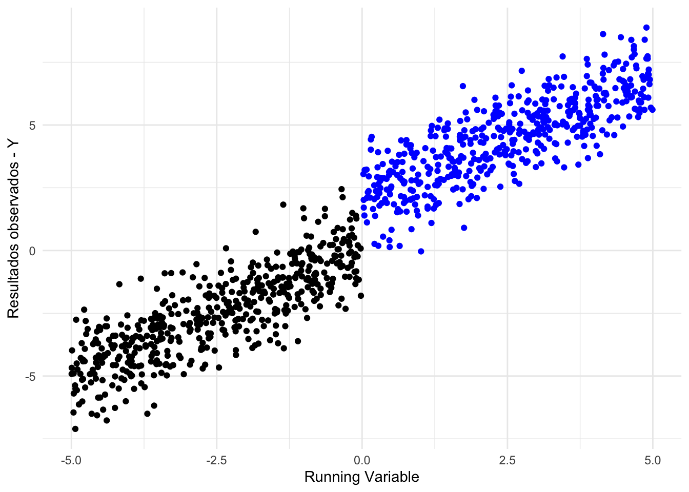
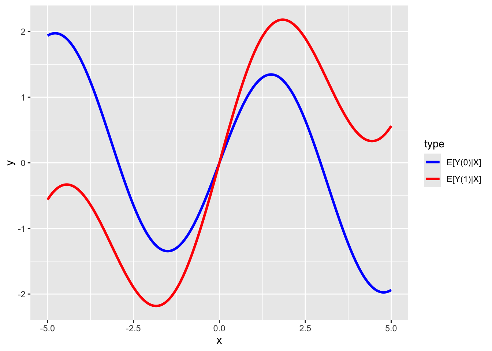
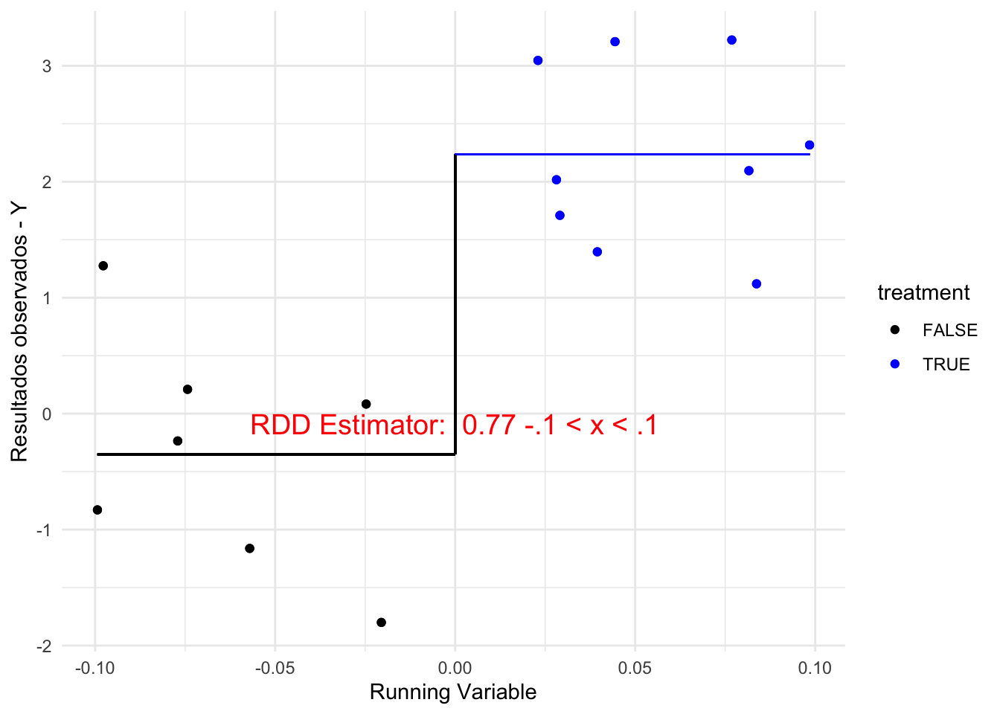

Capítulo 7 Desenho de Regressão Descontínua
7.1 Outline da aula
Na aula de hoje, iremos aprender sobre identificação causal do aspecto mais simples da RD e como funciona.
Em seguida, estimação e checagem. Falaremos rapidamente de extensões.
7.2 Características-chave da RDD
A Regressão Discontínua (RDD) é caracterizada por uma variável contínua \(X_i\), que determina quem recebe tratamento, denotado por \(T_i\) (1 se tratado). Por convenção, \(X\) é chamada de “running variable”, “assignment variable” ou “forcing variable”.
7.3 Fuzzy RDD
Pode acontecer do ponto de corte não determinar quem recebe ou não o tratamento, mas apenas a probabilidade de receber o tratamento.
Nesse caso, a regra serve como variável instrumental ao redor do ponto de corte.
Ex.: regra de voto determina número de cadeiras. Mas migração partidária altera o número. Então quem fica abaixo do número mínimo em um distrito pode ter cadeiras naquele distrito via migração partidária.
7.3.1 Observação e Corte
É essencial observar \(X\) e conhecer o ponto de corte ou limiar \(c\).
Uma das suposições da RDD é que ela requer a continuidade da variável \(X\) para identificação, embora, na prática, alguns estudos de RDD tenham usado running variables discretas. A continuidade de \(X\) é necessária porque a identificação ocorre no limite.
Mas a suposiçao chave é que os resultados potenciais devem ser contínuos ao redor do ponto de corte. Como sempre, essa suposição é intestável, devido ao problema fundamental da inferência causal. Lee (2008), em um artigo clássico, mostrou que uma condição mais restritiva é suficiente para identificação causal: que as unidades podem controlar a running variável, exceto ao redor do ponto de corte. Isso implica também que as covariáveis de pré-tratamento são contínuas no cutoff. Isso é potencialmente testável, pelo menos nas variáveis observadas e em geral olhando para a média das variáveis, o que não é a mesma coisa que olhar para outros momentos, que podem ser descontínuos.
7.3.2 Estimativa dos Efeitos do Tratamento
A comparação de \(\lim_{x \uparrow c} E[Y_i | X_i = x]\) com \(\lim_{x \downarrow c} E[Y_i | X_i = x]\) fornece uma estimativa dos efeitos do tratamento (note a direção das setas).
Esta comparação é equivalente a: \(\lim_{x \uparrow c} E[Y_i | X_i = x, T_i=0]\) e \(\lim_{x \downarrow c} E[Y_i | X_i = x, T_i=1]\), uma vez que, neste exemplo, à direita de \(c\) todos recebem tratamento; à esquerda, ninguém recebe. Portanto:
- \(\lim_{x \uparrow c} E[Y_i | X_i = x] \approx E[Y_{0i} | X_i = c]\)
- \(\lim_{x \downarrow c} E[Y_i | X_i = x] \approx E[Y_{1i} | X_i = c]\)
Se fôssemos usar regressão linear, o modelo seria: \(y_i = \alpha + \beta_1 (x_i > c) + \beta_2 x_i + \beta_3 x (x_i > c) + e_i\), em que \(c\) é o ponto de corte, e \(x\) é a running variable.
7.4 Suposição de continuidade
- A suposição de continuidade é tão crítica que vale discutirmos um pouco mais sobre ela.
- Se há continuidade, isso significa que, na ausência do ponto de corte \(c\), x (e outras covariáveis) não devem apresentar descontinuidade.
- Ex.: Suponha que estamos interessados em estudar o efeito da incumbência sobre a chance de reeleição futura ou riqueza futura desses políticos.
- Habilidades e carisma são variáveis que devem influenciar tanto a chance de serem incumbentes como os resultados de interesse. Em um RDD, podemos usar close elections para estimar o efeito. E a suposição de continuidade requer que carisma e habilidades não tenham descontinuidade no cut off de 50%. Na verdade, apenas o resultado eleitoral é descontínuo no cut off, que vai de não-eleito para eleito.
7.5 Suposições na RDD
7.5.1 Suposição de Não-manipulação com Precisão
A identificação dos efeitos do tratamento na RDD baseia-se na premissa de que \(X\) atua como um aleatorizador ao redor de \(c\). Imagine que \(X\) seja uma variável aleatória uniforme usada para atribuir tratamento. Se \(X \geq c\), uma unidade recebe tratamento. Na RDD, \(X\) tem o mesmo papel, exceto que não assumimos que \(X\) é independente do resultado \(Y\). Na maioria das aplicações, \(X\) e \(Y\) são correlacionados de alguma forma.
7.5.2 Problemas de Manipulação
No entanto, se \(c\) não for arbitrário ou tiver uma relação determinística com \(Y\), ou se as unidades puderem — com precisão — determinar seus escores \(X\) e, assim, escolher receber tratamento ou não, então \(X\) ao redor de \(c\) não se comporta mais como um aleatorizador — há alguma forma de auto-seleção que poderia depender de variáveis não observáveis.
7.6 Testabilidade da Suposição de não-Manipulação
Em parte, isso é testável. As unidades não pareceriam semelhantes perto de \(c\) e haveria um “acúmulo” próximo a \(c\). No entanto, não podemos descartar a manipulação com precisão apenas com dados — devemos argumentar isso com conhecimento do assunto (é uma restrição de exclusão).
Tendo estabelecido as suposições de identificação, passamos agora à questão prática: como estimar o efeito do tratamento em um RDD?
7.7 Estimação em RDD
7.7.1 Problema de Complete Overlapping
Um problema chave na estimação em RDD estrita é a completa falta de sobreposição.
Em matching, discutimos como a ausência de sobreposição gerava problemas de extrapolação.
Sobreposição requer que \(0 < P(T_i = 1 | X_i) < 1\) para o domínio de \(X_i\). No domínio da running variable \(X_i\), isso claramente não é satisfeito. Em RDD estrita, temos \(P(T_i = 1 | X_i < c) = 0\) e \(P(T_i = 1 | X_i \geq c) = 1\).
7.7.2 Dependência de Extrapolação
Devido à falta de sobreposição, dependemos de extrapolação para estimar os efeitos do tratamento. Dito de outra forma, podemos não ser capazes de estimar corretamente os efeitos do tratamento se errarmos a forma funcional \(Y_i = f(X_i)\). Novamente, essa foi uma motivação para usar matching.
O problema é que nunca sabemos se acertamos, então a especificação do modelo é uma questão chave na estimação RDD.
7.8 Métodos de Estimação
O problema sugere a necessidade de um método de estimação não paramétrico. Utilizaremos métodos paramétricos, não paramétricos (ou semiparamétricos) para tentar abordar essas questões.
7.9 Trade-off de Viés-Variância
- Mais perto de c: Melhor em termos de precisão, mas pode haver uma amostra insuficiente. Resulta em menos viés, mas mais variância.
- Mais distante de c: Dependemos menos de extrapolação, mas introduzimos mais viés, mesmo com menor variância.
7.9.1 Métodos de Largura de Banda Ótima
A ideia é restringir a estimativa a uma janela ao redor de \(X_i = c\), que pode ter tamanhos diferentes à esquerda ou à direita. Estes métodos buscam equilibrar a precisão das estimativas minimizando viés e variância conforme a proximidade do ponto de corte \(c\).
7.10 Regras arbitrárias
Atribuição de “coisas” a partir de regras com pontos de cortes
Bolsa família: a partir de certa renda
Educação: aprovação no ensino superior a partir de certa nota de corte
Espacial: política pública para donos de áreas abaixo ou acima de certas áreas.
Data: regras para aposentadoria, idade para entrar na escola, data para perdão de dívida: Desenrola: “…cujas dívidas tenham sido incluídas no cadastro de inadimplentes no período entre 1º de janeiro de 2019 e 31 de dezembro de 2022”.
Política: regras de número de vereadores, regras de população para ter segundo turno, regras para ter biometria etc.
7.11 Simulação
## Basic RD Model
set.seed(123)
N <- 1000 # number of observations
X <- runif (N , -5,5)
Y0 <- rnorm ( n =N , mean =X , sd=1) # control potential outcome
Y1 <- rnorm ( n =N , mean = X+2, sd=1) # treatment potential outcome
#You only get treatment if X>0
Treatment <- ( X >= 0)
# What we observe
Y = Y1* Treatment + Y0*(1- Treatment )


7.14 Simulação - Potential Outcomes Y1 e Y0

## Warning: No shared levels found between `names(values)` of the manual scale and the
## data's colour values.
7.15 Simulação - Y observado

A simulação acima ilustra os elementos fundamentais de um RDD. Vejamos agora em que condições as estimativas de RDD são válidas.
7.16 Quando o RDD funciona?
A suposição chave para o RDD é que tenha descontinuidade ao redor do ponto de corte, e que não haja descontinuidade ao redor do ponto de corte em outra variável omitida. Vamos ver o que isso significa, comparando quatro gráficos, três em que a estimativa do RDD é válida, mas com diferentes validades “externas” e uma em que é inválida.
## [1] 3.965471## [1] 0.1726892
## Warning: Using `size` aesthetic for lines was deprecated in ggplot2 3.4.0.
## ℹ Please use `linewidth` instead.
## This warning is displayed once every 8 hours.
## Call `lifecycle::last_lifecycle_warnings()` to see where this warning was
## generated.
7.17 Raw Data versus Bin

Como escolher os bins? 1. Espaçamentos iguais ou quantis? 2. Quantos bins?
No exemplo, escolhi espaçamento igual e 20 bins. Podemos usar quantis.

Não faz muita diferença neste exemplo, mas usar quantis é mais transparente e mais crível retoricamente, pois não mascara a densidade.
Sobre o número de bins, Cattaneo et al. (2020) discutem o tema e sugerem duas abordagens: 1. IMSE-minimizing (proporcional a \(n^{1/3}\)) 2. Mimicking-variance (proporcional a \(n/log(n)^2\))
E usamos o pacote rdplot para implementar isso automaticamente


7.18 Permutation tests (balancing)
Para checar balancing, podemos usar testes de permutação.
## y x treatment y0 y1 u
## 1 -4.9108800 -2.8126930 FALSE -4.9108800 0.24201180 -0.56047565
## 2 -3.4521053 -3.2945724 FALSE -3.4521053 0.06456756 -0.23017749
## 3 3.3243805 -5.0368128 FALSE 3.3243805 -10.37746355 1.55870831
## 4 1.5797551 0.1039258 TRUE -0.4349002 1.57975508 0.07050839
## 5 0.6339174 -0.1709231 FALSE 0.6339174 2.58972091 0.12928774
## 6 1.3680416 -0.5215457 FALSE 1.3680416 1.57907203 1.71506499resultado <- RDperm(
W = "u", # Substitua pelos nomes das suas covariáveis
z = "x", # Substitua pelo nome da sua variável de corte
data = df, # Substitua pelo seu data frame
cutoff = 0 # Substitua pelo valor do ponto de corte, se diferente de 0
)
summary(resultado)##
## **********************************************************
## ** RD Distribution Test using permutations **
## **********************************************************
## Running Variable: x
## Cutoff: 0
## q: Defined by User
## Test Statistic: CvM
## Number of Permutations: 499
## Number of Obs: 1000
##
## **********************************************************
## H0: 'Continuity of the baseline covariates at the cutoff'
## **********************************************************
##
## Estimates:
## T(Sn) Pr(>|z|) q
## u 0.01 0.92 10
## ---
## Signif. codes: 0.01 '***' 0.05 '**' 0.1 '*'
Canay & Kamat (2018) utilizaram esse teste para revisitar o trabalho de Lee (2008) e descobriram que havia problema de balanceamento.
Caughey and Sekhon (2011) na political analysis mostraram que de fato havia problemas de balanceamento no estudo de Lee (2008).
Do paper da PA:
Houve um debate na ciência política sobre isso. Erikson & Rader (2017) e Cuesta & Imai (2016) argumentam que o RDD é identificado. Até onde eu sei, cientistas políticos não revisitaram a controvérsia com os novos metodos desenvolvidos pelos economistas.
De todo modo, as evidências de De Magalhães et al. (2025) sugerem que a recomendação que estou adotando no curso de quais práticas usar são as melhores e mais robustas.
7.19 McCrary test
Um dos principais desafios à identificação causal em RDDs é a possibilidade de manipulação por parte dos agentes sobre ficar acima ou abaixo do ponto de corte. A lógica esperada é que se o tratamento é desejável, indivíduos tentarão receber o tratamento, levando a um gap justamente abaixo do ponto de corte. Se o tratamento é indesejável (efeitos negativos), indivíduos vão evitar o tratamento, levando a um gap justamente acima do ponto de corte.
O exemplo mais evidente para nós cientistas políticos é a aprovação de um projeto de lei no legislativo. Nós sabemos que os legisladores agem estrategicamente retirando propostas que não vão ser aprovadas ou postergando a votação, até terem a maioria, ainda que por margem mínima. Nesse caso, a aplicação de RDD produzirá estimativas viesadas. McCrary, em um artigo de 2008, argumentou que tais casos apareceriam como descontinuidade na densidade da running variable ao redor do ponto de corte. Eis o gráfico feito por McCrary em seu estudo original:

Para formalizar essa ideia, McCrary estima os limites da densidade pela esquerda e pela direita e avalia se a diferença (do logaritmo) das estimativas é estatisticamente significante diferente de zero. Portanto, rejeitar a hipótese nula é encontrar evidências de que há manipulação. Cattaneo, Jansson, & Ma 2018; 2020 introduziram uma versão alternativa do teste, com espírito similar.
Na prática, de um ponto de vista retórico, o que pesquisadores querem é falhar em rejeitar a nula. Como o teste tem baixo poder de rejeitar a nula, ausência de evidência não quer dizer evidência de ausência.
## [1] 0.6885203Cattaneo Density Test (Improved Version)
library(rddensity)
# Simulated continuous density
rdd <- rddensity(X = df$x, vce = "jackknife")
summary(rdd)##
## Manipulation testing using local polynomial density estimation.
##
## Number of obs = 1000
## Model = unrestricted
## Kernel = triangular
## BW method = estimated
## VCE method = jackknife
##
## c = 0 Left of c Right of c
## Number of obs 484 516
## Eff. Number of obs 136 229
## Order est. (p) 2 2
## Order bias (q) 3 3
## BW est. (h) 1.63 2.095
##
## Method T P > |T|
## Robust 0.6125 0.5402
##
##
## P-values of binomial tests (H0: p=0.5).
##
## Window Length <c >=c P>|T|
## 0.174 + 0.174 20 20 1.0000
## 0.336 + 0.349 34 45 0.2604
## 0.498 + 0.523 52 60 0.5085
## 0.659 + 0.697 65 82 0.1868
## 0.821 + 0.872 81 96 0.2926
## 0.983 + 1.046 96 116 0.1918
## 1.145 + 1.220 109 133 0.1391
## 1.306 + 1.395 122 153 0.0702
## 1.468 + 1.569 128 173 0.0111
## 1.630 + 1.743 136 189 0.0039Essa é uma área ativa de pesquisa, com novos testes sendo desenvolvidos, por exemplo, Fitzgerald (2025), que é um working paper.
7.20 Robustez
Mostrar várias estimativas, para várias escolhas de estimações (bandwidth etc.)
Uma possibilidade é simplesmente apresentar várias estimativas, como faremos abaixo. Ou então, uma tabela. Mas o mais simples seria um gráfico dos efeitos com seus respectivos ICs, em que cada entrada no eixo x é uma estimação, e no y temos o efeito. Abaixo apresento duas dessas possibilidades para ilustrar como a última é a melhor.


df1 <- data.frame(
estimate = vec_estimate,
se = se_estimate,
lower = vec_estimate - 2 * se_estimate,
upper = vec_estimate + 2 * se_estimate,
h = c("Aut" , "h=1", "h=.5" , "h=.1") # ou names(vec_estimate) se o vetor for nomeado
)
# 2) Plote com pontos e barras de erro
ggplot(df1, aes(x = h, y = estimate)) +
geom_point(size = 2) +
geom_errorbar(aes(ymin = lower, ymax = upper), width = 0.1) +
labs(
x = "h",
y = "Estimativa",
title = "Efeitos estimados com IC (±2×SE)"
) +
theme_minimal()7.22 Regressão RDD
library(rdrobust)
# Assuming the cutoff is at x=0
basic_model <- rdrobust(y = df$y, x = df$x, c = 0)
summary(basic_model)## Sharp RD estimates using local polynomial regression.
##
## Number of Obs. 1000
## BW type mserd
## Kernel Triangular
## VCE method NN
##
## Number of Obs. 484 516
## Eff. Number of Obs. 124 152
## Order est. (p) 1 1
## Order bias (q) 2 2
## BW est. (h) 1.375 1.375
## BW bias (b) 2.375 2.375
## rho (h/b) 0.579 0.579
## Unique Obs. 484 516
##
## =============================================================================
## Method Coef. Std. Err. z P>|z| [ 95% C.I. ]
## =============================================================================
## Conventional 2.221 0.305 7.283 0.000 [1.623 , 2.818]
## Robust - - 6.539 0.000 [1.630 , 3.025]
## =============================================================================7.23 Placebo Tests
Testando descontinuidade em covariáveis predeterminadas: covariáveis que não devem ser afetadas pelo tratamento não devem apresentar salto no ponto de corte.
Testando descontinuidades em outros pontos: verificar a existência de descontinuidades em pontos arbitrários ao longo da variável de ordenação.
Uso de VDs placebos: se uma variável dependente que não deveria ser afetada pelo tratamento apresentar descontinuidade significativa, isso levanta dúvidas sobre a validade do desenho RD.
Avaliação de sensibilidade às covariáveis: as estimativas de RD não devem ser altamente sensíveis à inclusão ou exclusão de covariáveis.
7.24 PCRD
Marshall (2024) na AJPS introduz a nomenclatura do desenho de pesquisa Politician characteristic regression discontinuity (PCRD). Basicamente, o argumento é que RDD não permite identificar efeito de características de políticos (como gênero, profissão, raça, ideologia, alinhamento com governo federal etc.)
“In contrast, the treatment in PCRD designs — which instead seek to estimate the LATE of an elected politician characteristic — is defined by possessing (or not) predetermined characteristic X, conditional on narrowly winning an election. (…) restricting attention to close elections entails conditioning on candidate vote shares that may be affected by X. (…) [It] generally introduce bias — even when X is independent of other predetermined variables and the weak continuity assumption underpinning standard RD designs holds.” (p. 495)
Basicamente, Marshall está dizendo que nesses casos, close election é um collider, e isso abre as portas para vieses de variáveis que causem \(y\) e se a eleição é apertada.
7.25 Checklist para um paper de RDD
Teste de balanceamento de variáveis de pré-tratamento (não impactadas pelo tratamento)
Teste de permutação no cutoff (outra forma de olhar balanceamento)
Densidade da running variable (teste de McCrary)
Testes de placebo (cutoffs arbitrários. Estimativa não muda)
Gráfico com a descontinuidade
Estimativas baseadas em bandwidth ótimos, e local linear regression
Análise de robustez junto com a escolha do bandwidth (apresente graficamente)
Ordem preferida: primeiro estabelecer a validade da estratégia, depois detalhes da estimação.
7.26 Referências
Canay, I. A., & Kamat, V. (2018). Approximate permutation tests and induced order statistics in the regression discontinuity design. The Review of Economic Studies, 85(3), 1577-1608.
Cattaneo, M. D., Idrobo, N., & Titiunik, R. (2024). A practical introduction to regression discontinuity designs: Extensions. Cambridge University Press.
Cattaneo, M. D., Idrobo, N., & Titiunik, R. (2019). A Practical Introduction to Regression Discontinuity Designs: Foundations. Elements in Quantitative and Computational Methods for the Social Sciences.
Cattaneo, M. D., & Titiunik, R. (2022). Regression discontinuity designs. Annual Review of Economics, 14(1), 821-851.
De Magalhães, L., Hangartner, D., Hirvonen, S., Meriläinen, J., Ruiz, N. A., & Tukiainen, J. (2025). When Can We Trust Regression Discontinuity Design Estimates from Close Elections? Evidence from Experimental Benchmarks. Political Analysis, 1-8.
Fitzgerald, J. (2025). Manipulation Tests in Regression Discontinuity Design: The Need for Equivalence Testing.
Gelman, A., & Imbens, G. (2019). Why high-order polynomials should not be used in regression discontinuity designs. Journal of Business & Economic Statistics, 37(3), 447-456.
Marshall, J. (2024). Can close election regression discontinuity designs identify effects of winning politician characteristics?. American Journal of Political Science, 68(2), 494-510.
Erikson, R. S., & Rader, K. (2017). Much ado about nothing: rdd and the incumbency advantage. Political Analysis, 25(2), 269-275.
De la Cuesta, B., & Imai, K. (2016). Misunderstandings about the regression discontinuity design in the study of close elections. Annual Review of Political Science, 19(1), 375-396.
Marshall, J. (2024). Can close election regression discontinuity designs identify effects of winning politician characteristics?. American Journal of Political Science, 68(2), 494-510.